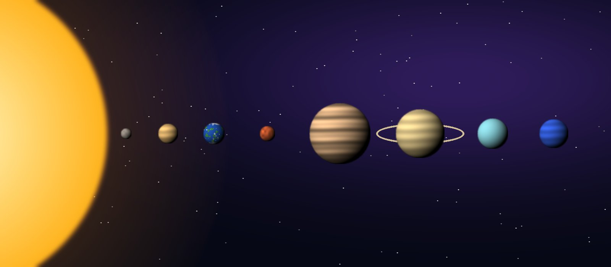

El Sistema Solar se formó hace unos 4,600 millones de años a partir de una nube de gas y polvo. En esta página puedes conocer a los planetas rocosos, a los gigantes gaseosos y al Sol y la Luna, usando el menú de arriba.

Ocho planetas, una estrella y una luna que nos acompaña todas las noches.
El Sistema Solar se formó hace unos 4,600 millones de años a partir de una nube de gas y polvo. En esta página puedes conocer a los planetas rocosos, a los gigantes gaseosos y al Sol y la Luna, usando el menú de arriba.